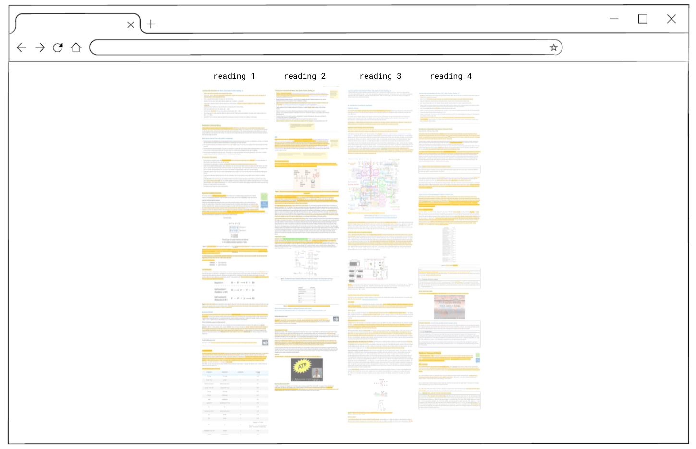
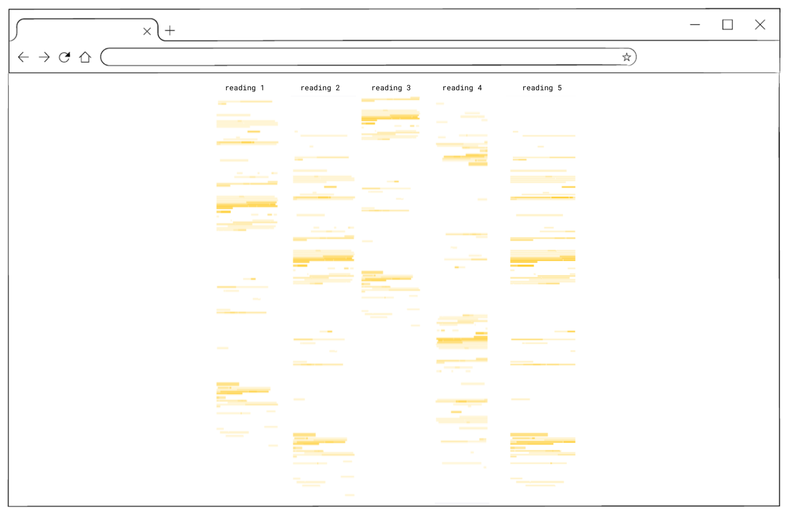
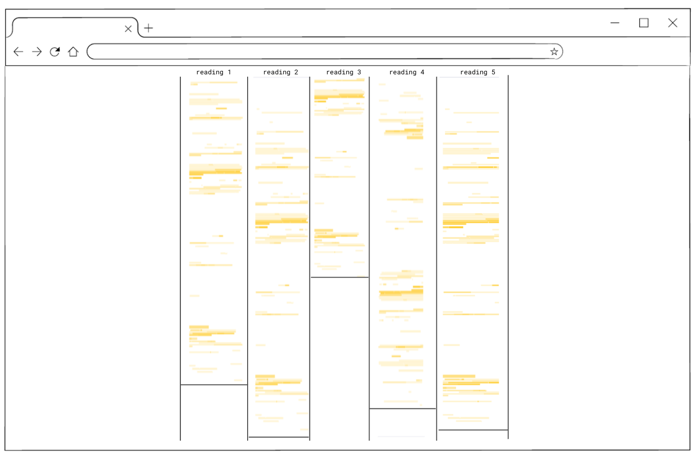
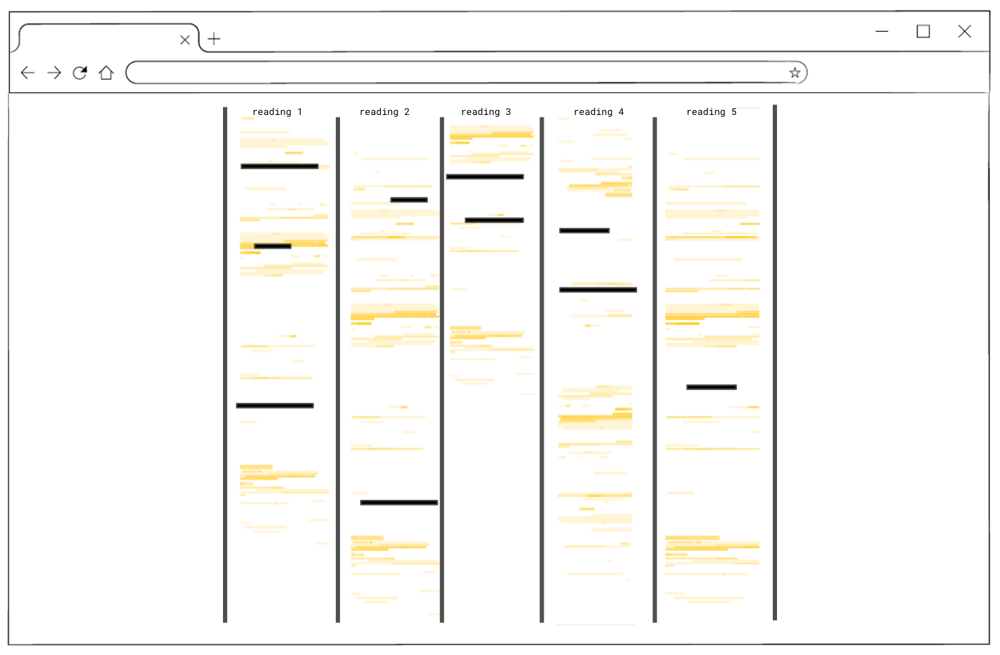
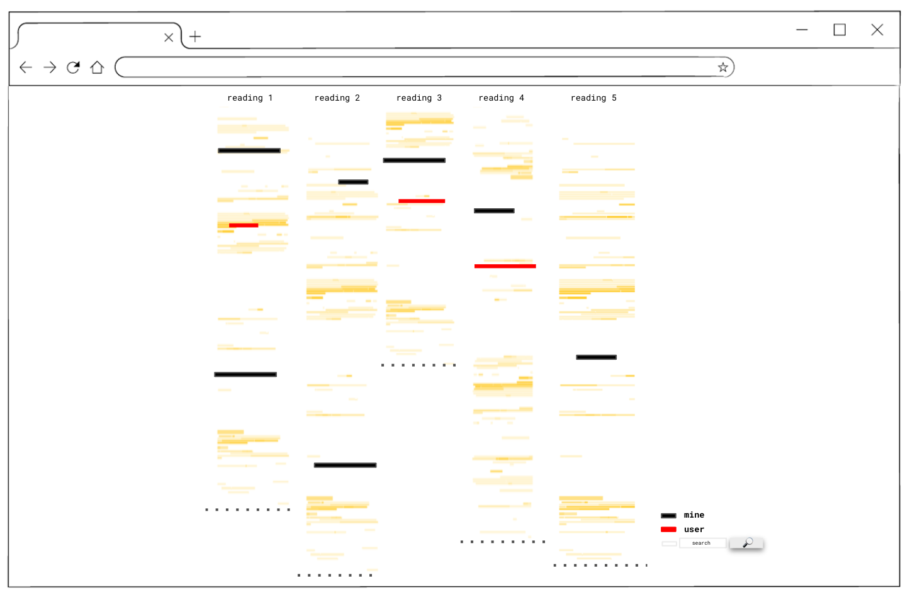

DOCUMAP DESIGN JOURNEY
week 1
generating and sketching ideas
Idea1: the highlight map view
view the document as highlights without text and maybe show emoji on the side

Idea2: read the document through annotations
view the document as the annotations from others instead of the actual text

Idea3: the emoji map
view the document with a map of emojis on top to show interesting or confusing areas areas

Design Iteration
In this iteration we show filters, buttons and a search bar to personalize the reading experience (emoji, username, keyword). We also show a small map of the entire document the reflects the changes without the need to scroll down.
2nd Minimap Idea: VSCode
Here is another minimap idea (VSCode) that is attached to the scrollbar and marks highlighted/underlined pieces of text on the scrollbar itself.

abstract art visualizations
example of D3 code that generates art. We can map (e.g. annotation lenghth, time created, offset of highlights, emoji ...) to the encodings of these visualizations
week 2
view and compare
In this iterration the map provides users with a multiple view of the documents that were read and annotated by the user.
first we iterated by showing the documents annotated side by side
Then we looked at the documents without text and only the highlights
we explored using vertical lines to seperate the view, and horizontal lines to indicate the length of the document
we explored the boldnes of the lines to emphasize important highlights (by the user or someone else)
proposed experience
in this view the highlights vary in color based on the interest of the user, and can add more colors based on the filters. Annotations could be viewed through hovering over the highlights creating a connection between this map view and the original document. Dotted horizontal line indicates the length of the doccument. Legen shows the activated filters.
